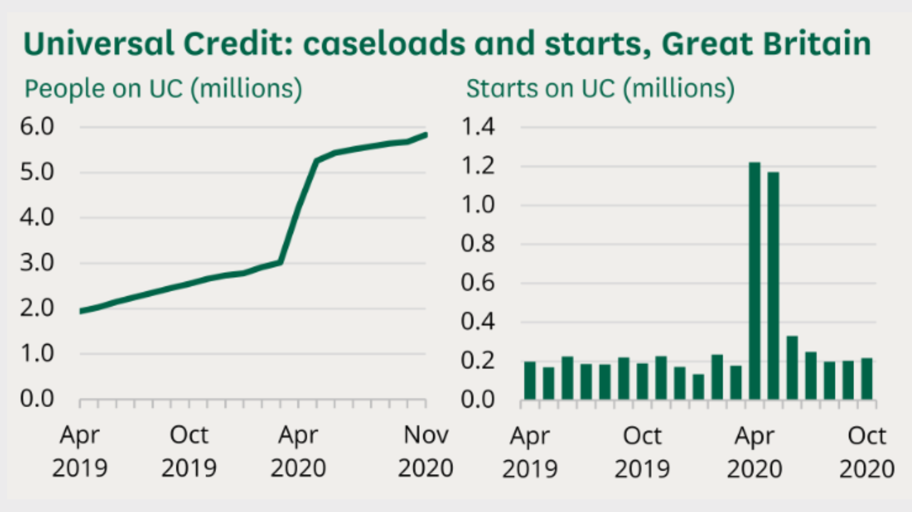
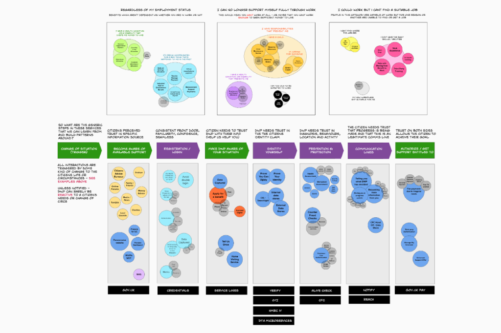
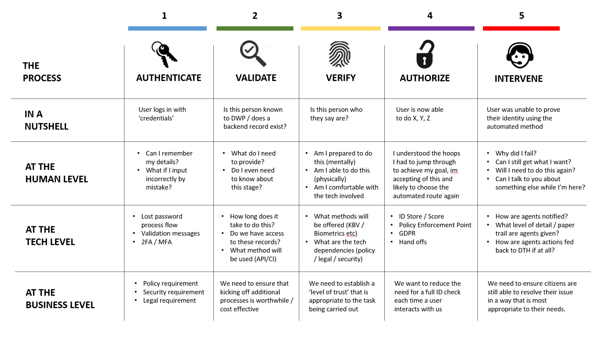
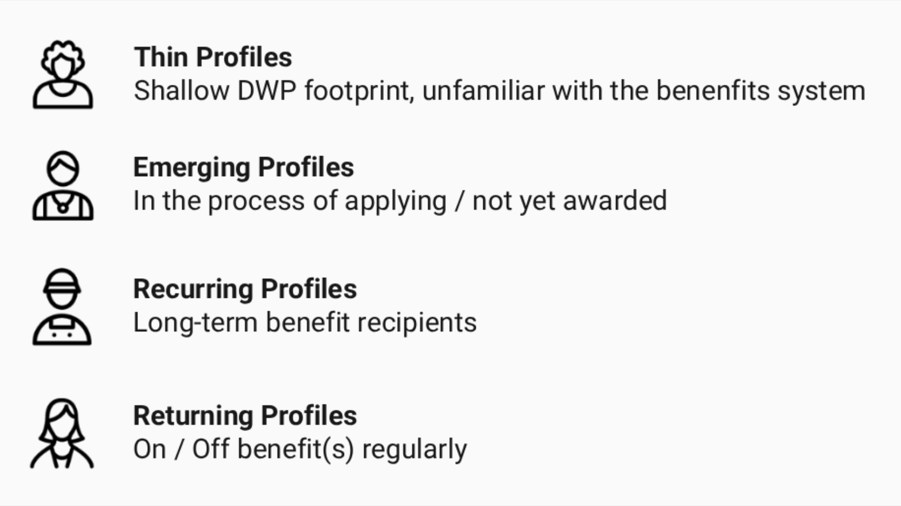
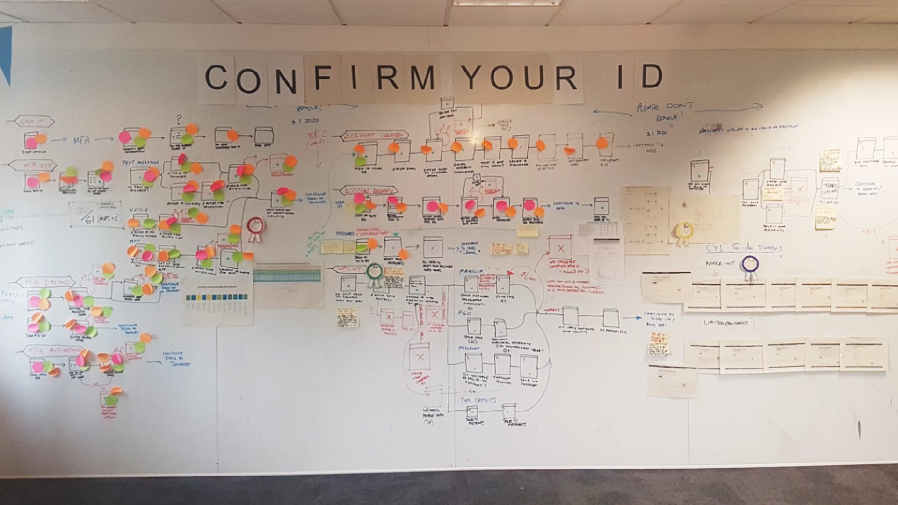
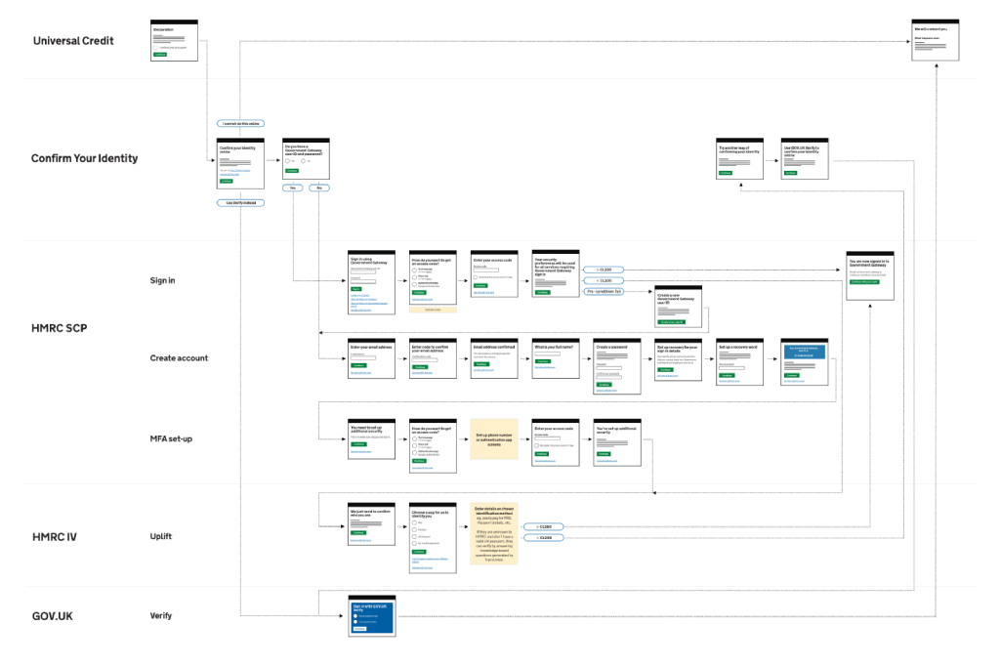
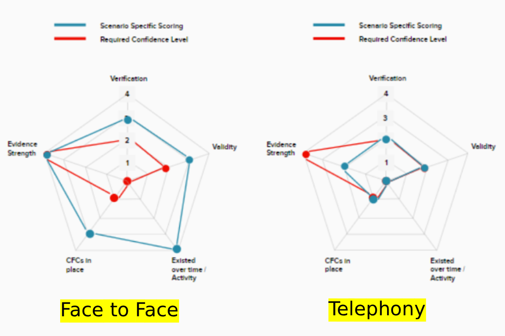
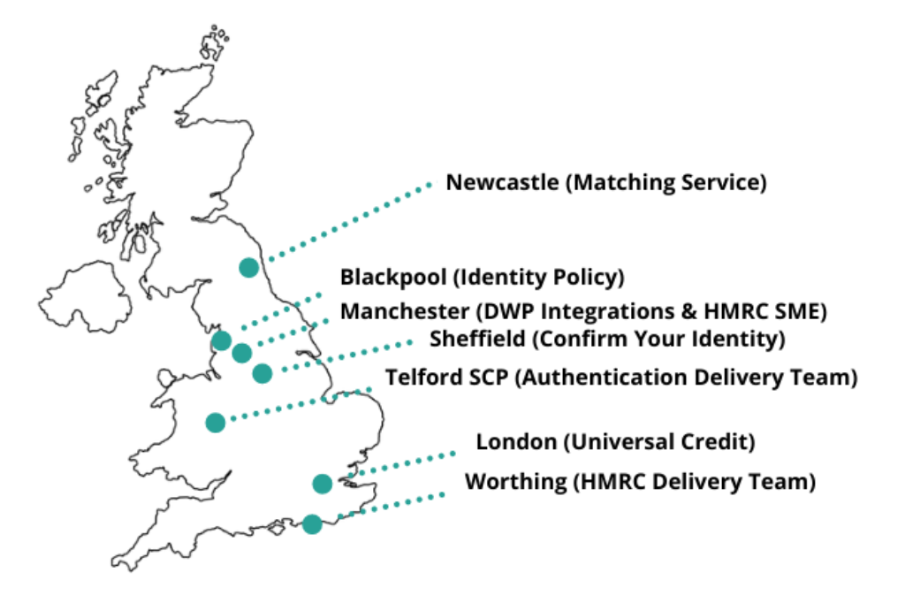

Cross-government delivery at pace
Providing a statistically significant alternative to GOV.UK Verify
01
The Problem
GOV.UK Verify had only been achieving success rates of around 38% (figures taken from the National Audit Office). This meant a large proportion of people who were unsuccessful in applying online, were then having to attend face-to-face identity interviews instead.
This resulted in:
- An increased cost to DWP to administer these checks
- Work Coaches having less time to manage their caseloads, meaning they were unable to focus on their most vulnerable claimants
- An inconvenience to claimants, particularly those moving from Tax Credits to UC as they would need to take time off work to attend their job centre appointment.
A decision was made to provide a complementary alternative to Verify, its aim was to allow claimants to intuitively and efficiently prove their identity online. Thereby saving time and effort for the claimant, whilst also enabling cost savings for DWP.
02
Unforseen circumstances
Originally scheduled for Sept 2020, the outbreak of COVID-19 forced the proposed solution (CYI) to became an accelerated delivery and a primary focus for the Identity & Trust Directorate.
With face-to-face meetings unavailable during this time, Universal Credit was experiencing unprecedented demand for online and agent led processes.

The ask was to help alleviate this pressure by providing a statistically significant alternative to GOV.UK Verify as soon as possible.
03
Methods and techniques used
I employed ecosystems and landscape mapping to show how Identity Verification cuts across multiple government departments, systems, benefit lines and operational channels.

04
Strategic Maps / Overviews
Whilst Confirm Your Identity (CYI) was intended to meet a specific need for Universal Credit, it was also part of the wider Dynamic Trust Hub. So, it was important for me to illustrate the cause and effect of what we were proposing at each stage of our (and other stakeholders) processes.

05
Epic Level Personas
In addition to our more traditional personas within the User Research team, I also wanted to introduce some Epic Level Personas too. This ensured stakeholders didn’t fall into the trap of thinking citizens are one size fits all. Especially with regards to the data DWP holds about a person, and whether that data can be used as part of an identity challenge.

06
Journey Maps & Process Flows
Before the widespread use of Mural / Miro within DWP, we were restricted to whiteboards, blue-tack and post-its to articulate our citizens journeys. However, this hands-on approach did seem to bring the team closer together and prompted many animated discussions at the time.

07
Content & Interaction Design
Since CYI was essentially piggy backing off existing Government Gateway screens, those screens could not be changed in any way. As such, we needed to map out all potential drop out points and how these would be handled from a content and IXD perspective. Our goal was to ensure citizen continued to have a seamless experience even though they were potentially being passed between 5 different services.

08
User Research - Test & Learn
I arranged a series of UR sessions at Doncaster Job Centre, plus three Lab Based tests in Leeds.
Our aim was to:
- Build on our existing user research findings
- Test in the real world with real users (our first opportunity)
- Test that users can do what they need to do (technically)
- Learn how we can improve the user experience
- Test that the back-end connections work
- Test our support model approach if the service were to break

09
Collaboration - breaking new ground
CYI broke new ground on a number of cross-government levels, some of which are highlighted below:
- First provision of HMRC IV (Identity Verification) to non-HMRC users
- First bespoke ‘Help’ content delivered for users within HMRC IV
- Integration with DWP Matching (Findr) Service
- Co-design of Universal Credit ‘To Do’ screens, including regular intelligent challenges

10
Reception & Impact
some words in here about impact and reception
“I could not be any prouder of the team. A massive challenge but so important, everyone knew that and reacted to it.” - Cheryl Stevens MBE (Deputy Director for ID&T)
“CYI is a fantastic achievement, what a critical delivery in such difficult circumstances.” - Fay Cooper (Head of Product & UCD)